저소음 설계
조용한 공간에서도 사용 부담을 줄일 수 있도록 작동음 수준을 고려했습니다.
아즈라 누보몽드 02는 아이의 코에 닿는 순간을 고려해 작동음, 흡입 단계, 노즐 구성, 분리 세척 흐름을 함께 설계한 콧물흡입기입니다.
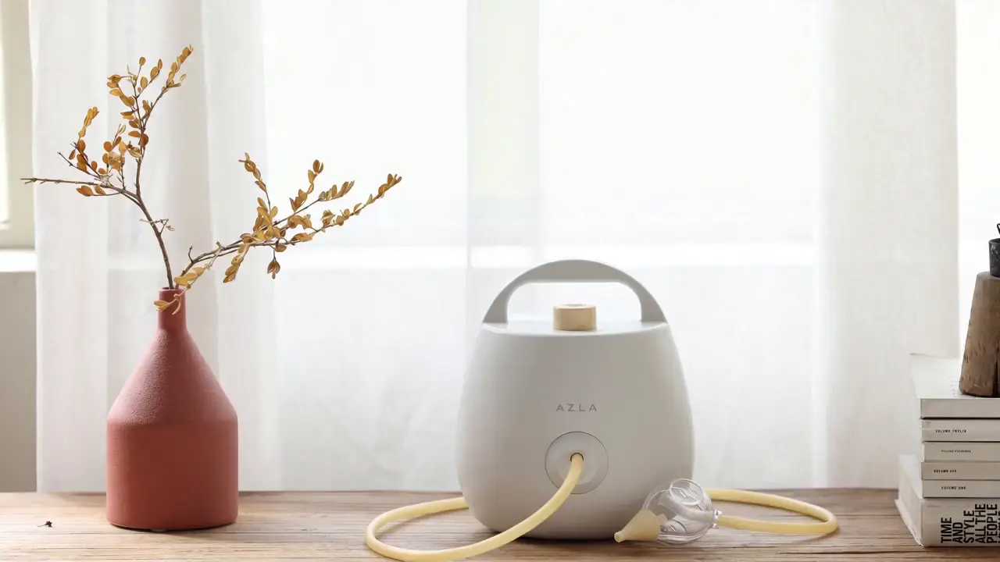
흡입력만 보지 말고, 작동음과 노즐 접촉감, 사용 후 세척 흐름, 제조 신뢰까지 함께 확인해 주세요.
조용한 공간에서도 사용 부담을 줄일 수 있도록 작동음 수준을 고려했습니다.
낮은 단계에서 시작해 아이의 반응을 보며 단계적으로 조절할 수 있습니다.
KCC사 실리콘 SH2670U(의료용 제품, USP Class VI)를 사용, 코 크기에 맞춰 교체하여 사용할 수 있습니다.
사용 후 간편하게 헤드를 분리하여 세척·건조·보관할 수 있도록 구성했습니다.
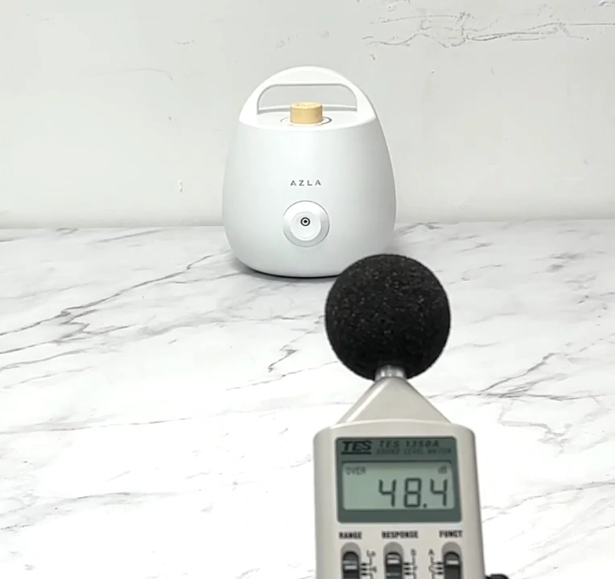
* 국가 기술표준원이 제시한 기준으로 측정 진행
(표준번호 KS C IEC60704-1) / 촬영환경에 따라 차이가 있을 수 있습니다.
최소 약 58.3dB 작동음으로, 편안하게 새벽에도 사용 가능합니다. 소음을 줄이기 위해 내부 흡음재에 신경써 제작 하였습니다.
실제 체감 소음은 공간, 거리, 흡입 단계에 따라 달라질 수 있습니다.
늦은 시간에도 작동음 부담을 줄일 수 있도록 저소음 설계를 고려했습니다.
짧은 사용으로도 보호자가 차분히 준비할 수 있습니다.
거실, 침실 등 가족이 함께 있는 공간에서도 사용 상황을 고려했습니다.
상세 소음 수치는 최종 제품 자료와 측정 기준에 따라 확인해 주세요.
누보몽드 02는 3.3~11.5kPa 범위의 7단계 흡입력 조절을 제공합니다. 아래 조절기는 제품 이해를 돕기 위한 예시이며, 실제 사용은 동봉된 사용설명서의 사용방법과 주의사항을 따르십시오.
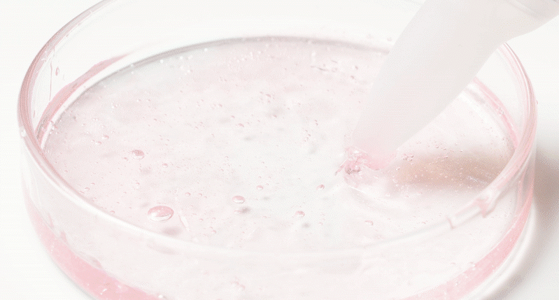
제품 기준 흡입 범위: 3.3~11.5kPa
노즐은 코 주변에 직접 닿는 부품입니다. 누보몽드 02는 기본 노즐과 커스텀 노즐을 포함한 5종 구성을 제공하며, KCC사 실리콘 SH2670U(의료용 제품, USP Class VI)를 사용하여 안심하고 사용할 수 있습니다.
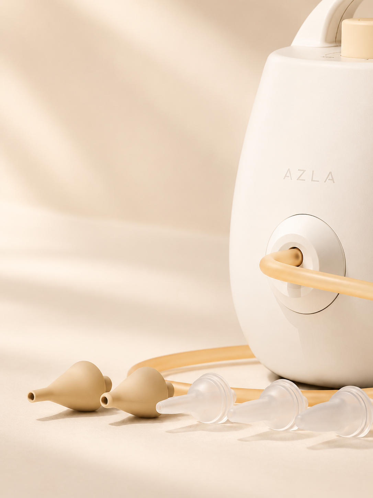
선택된 노즐 상세 이미지넓은 접촉면을 가진 기본 노즐입니다. 사용 전 코 크기와 밀착 상태를 확인한 뒤 선택해 주세요.
노즐 선택과 사용 방법은 제품 설명서 기준을 따르며, 아이의 반응을 보며 낮은 단계부터 확인해 주세요.
사용 전후의 흐름을 간단히 정리했습니다. 자세한 사용 시간과 방법은 반드시 동봉된 사용설명서를 확인해 주세요.
코 크기, 콧물의 묽기와 양, 아이의 반응을 확인합니다.
사용 상황에 맞는 노즐을 선택하고 장착 상태를 확인합니다.
낮은 흡입 단계에서 시작해 반응을 확인합니다.
설명서 기준에 따라 짧게 나누어 사용합니다.
사용 후 분리 가능한 부품을 확인하고 세척합니다.
충분히 건조한 뒤 다음 사용을 위해 정리합니다.
자세한 사용 방법과 사용 시간은 동봉된 사용설명서를 확인하십시오.
콧물흡입기는 반복 사용 후 관리가 중요합니다. 분리 가능한 부품과 세척 가능한 부위를 확인하고, 설명서 기준에 따라 세척·건조·보관하십시오.
사용 후 분리 가능한 부품을 확인합니다.
설명서 기준에 따라 세척 가능한 부위를 헹굽니다.
물기를 제거하고 충분히 건조합니다.
다음 사용을 위해 구성품을 정리해 보관합니다.
물세척 가능 부품과 불가능 부품, 열탕 소독 가능 부품은 제품 설명서 기준을 따르십시오.
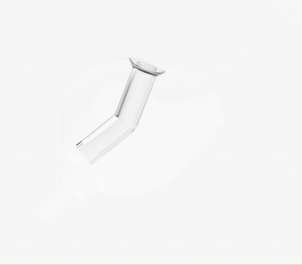
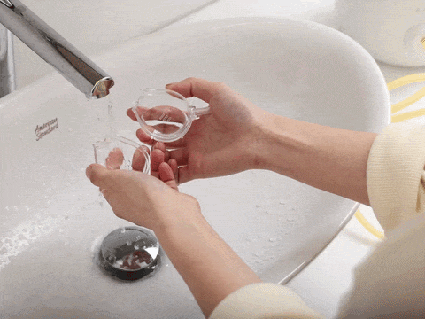
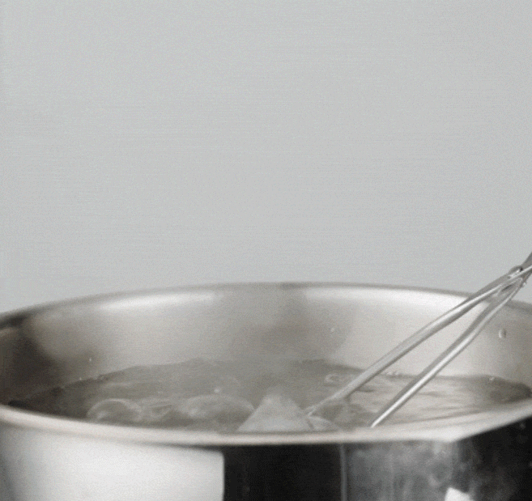
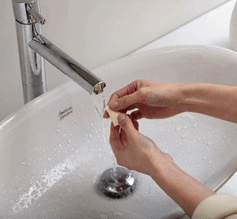
아즈라 누보몽드 O2 전동식 의료용 흡인기는 높은 품질과 안전성을 기반으로 제작되었습니다.
꼼꼼하게 확인하여 신뢰할 수 있는 제품을 선택해 주세요.
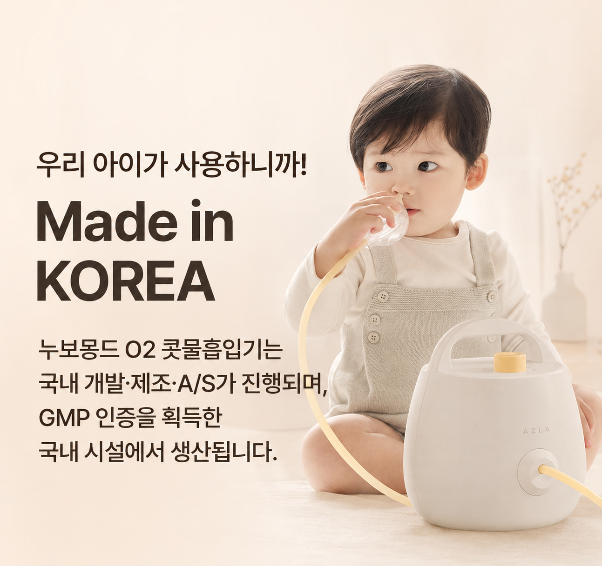
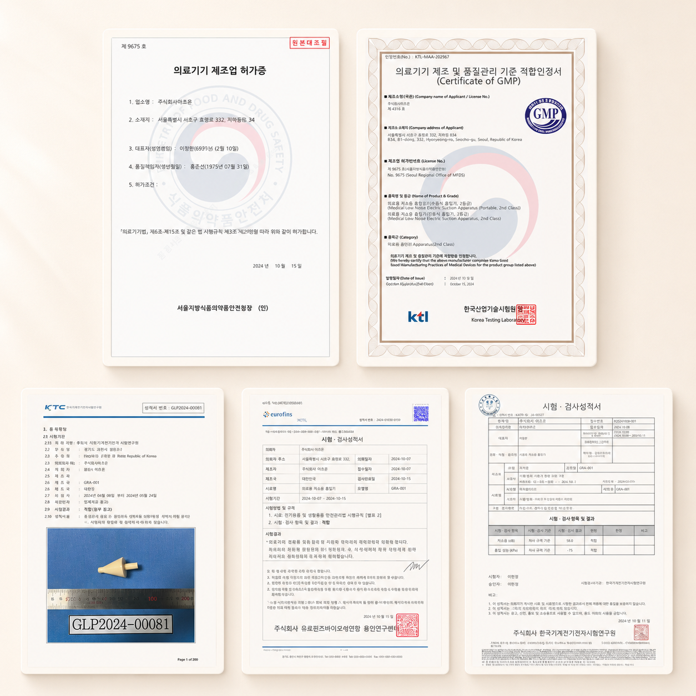
제품 사용 전에는 사용설명서와 주의사항을 함께 확인하십시오.
제품 사용 가능 연령과 방법은 제품 설명서 기준을 따릅니다. 신생아와 영유아에게 사용할 경우 보호자가 낮은 단계부터 아이의 반응을 확인하며 사용해 주세요.
누보몽드 02는 약 58dB대 저소음 설계를 기준으로 안내하고 있습니다. 실제 체감 소음은 공간, 거리, 흡입 단계에 따라 달라질 수 있습니다.
3.3~11.5kPa 범위에서 7단계로 조절할 수 있습니다. 처음에는 낮은 단계에서 시작해 아이의 반응을 확인하며 조절해 주세요.
코 크기와 사용 상황에 따라 5종 노즐 중 선택 시 참고할 수 있습니다. 실제 사용 전에는 제품 설명서의 노즐 안내를 확인해 주세요.
사용 후 분리 가능한 부품과 세척 가능한 부위를 확인한 뒤 설명서 기준에 따라 세척해 주세요. 본체와 전기 부품은 물에 담그지 않도록 주의해야 합니다.
열탕 소독 가능 부품은 내부 튜브, 노즐팁(5종), 열탕소독 전용헤드이며 불가능 부품은 제품 설명서 기준을 따릅니다. 부품별 관리 방법을 확인한 뒤 진행해 주세요.
본체, 연결 호스, 노즐 관련 부품, 5종 노즐 등으로 구성됩니다. 최종 구성은 공식 구매처의 제품 구성 안내를 확인해 주세요.
제품 보증은 18개월을 제공하여 드립니다. 보증 범위와 제외 조건은 공식 구매처 또는 동봉 문서를 확인해 주세요. 보증기간 이후에도 유상으로 서비스 받을 수 있습니다.
안전한 사용을 위해 과열 또는 연속 동작 시 자동으로 전원이 차단되도록 설정되어 있습니다. 불량이 아닌 정상 동작이며, 이럴 경우 충분한 휴지기를 가진 후 재사용 하여 주시기 바랍니다. (1회 2분 이내 사용을 권장)
아즈라 누보몽드 02의 구성, 판매 조건, 배송 안내, 보증 기준은 공식 구매처에서 확인할 수 있습니다.
이 제품은 의료기기이며, 사용상의 주의사항과 사용방법을 잘 읽고 사용하십시오.
의료기기 광고심의필: 심의승인번호 조합-2025-38-069 / 유효기간: 2028.10.22